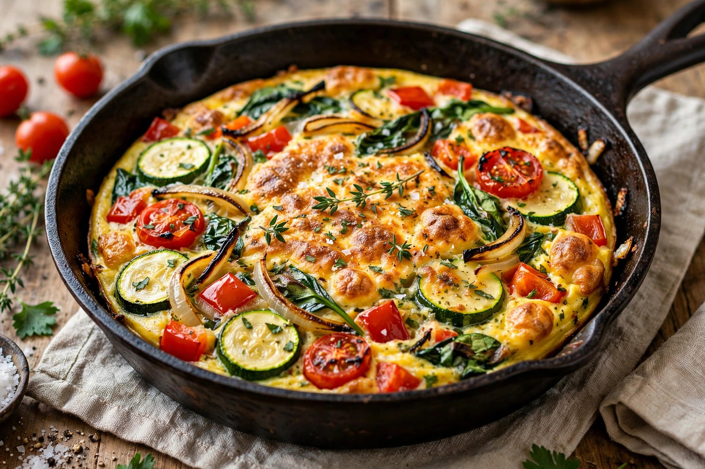

From Wikipedia, the free encyclopedia
| Frittata | |
|---|---|
 | |
| Type | Egg dish |
| Place of origin | Italy |
| Main ingredients | Eggs; fillings such as vegetables, cheese, meat, or pasta |
Frittata is an Italian egg-based dish similar to an omelette or a crustless quiche, enriched with additional ingredients such as meats, cheeses, and vegetables. The word frittata derives from the Italian friggere, roughly meaning "fried". Unlike an omelette, a frittata is not folded, is cooked slowly over low heat, and is typically started on the stovetop and finished in the oven or under a broiler.
The frittata developed in Italy as a way to use leftover ingredients, including pasta. In Naples, the frittata di maccheroni—made with leftover spaghetti—became a classic picnic and beach food. Italian immigrants carried the dish to the United States, where it became a staple of Italian-American cooking.
Beaten eggs are combined with fillings and poured into a hot, oiled skillet, traditionally cast iron. The mixture cooks gently without stirring until the edges set; the top is then set under a broiler or by flipping the frittata onto a plate and sliding it back into the pan. Frittatas are served warm, at room temperature, or cold, cut into wedges.
The Spanish tortilla de patatas is a close relative made with potatoes and olive oil. Unlike a French omelette, which is cooked quickly and folded around a soft centre, the frittata is firm throughout and sliced like a pie.
Omelette · Quiche · Tamagoyaki